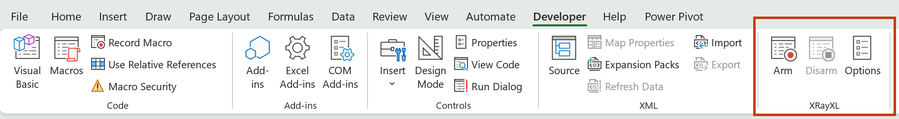
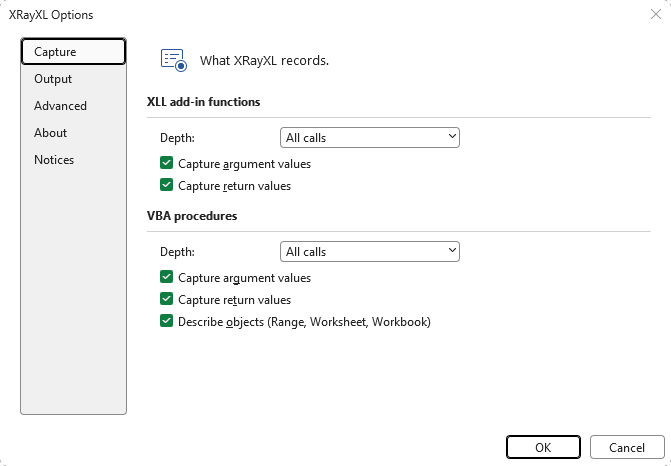

The real sequence
Every entry and exit in the order Excel actually ran them — not the order the sheet is laid out in, and not the order you assumed.
When a spreadsheet is slow, freezes, or crashes, XRayXL tells you which XLL add-in and VBA functions actually ran — in what order, on which thread, triggered by which cell or button, with what arguments, returning what, how long each took, which functions threw errors and which handled them.
It changes nothing about your workbook: no cells touched, no macros added, no VBA source read. You arm it, recalculate or run your macros, then read the trace file to see what really happened.
Four cells, in the order Excel calculated them rather than the order they sit on the sheet. A3 calls VbaOuter, which calls an add-in function through Application.Run; then A4, A2 and A1.
| seq | kind | source | module | function | caller | callerref | args | ret | outcome | ticks |
|---|---|---|---|---|---|---|---|---|---|---|
| 1 | entry | VBA | [OneTimeline_39248.xlsm]Probe | VbaOuter | cell | Sheet1!A3 | a1:Double=3 | |||
| 2 | entry | XLL | TracedAddin64.xll | TxE | cell | Sheet1!A3 | a1:E=3 | |||
| 3 | exit | XLL | TracedAddin64.xll | TxE | 3 | returned | 113 | |||
| 4 | exit | VBA | [OneTimeline_39248.xlsm]Probe | VbaOuter | 4 | returned | 2766 | |||
| 5 | entry | XLL | TracedAddin64.xll | TxE | cell | Sheet1!A4 | a1:E=4.5 | |||
| 6 | exit | XLL | TracedAddin64.xll | TxE | 4.5 | returned | 116 | |||
| 7 | entry | VBA | [OneTimeline_39248.xlsm]Probe | VbaPlain | cell | Sheet1!A2 | a1:Double=2 | |||
| 8 | exit | VBA | [OneTimeline_39248.xlsm]Probe | VbaPlain | 6 | returned | 181 | |||
| 9 | entry | XLL | TracedAddin64.xll | TxE | cell | Sheet1!A1 | a1:E=1.5 | |||
| 10 | exit | XLL | TracedAddin64.xll | TxE | 1.5 | returned | 159 |
Abridged for width. The file is a plain CSV of 22 columns, and also carries input, span, parent, depth, thread, qpc, proc, typetext, argcount, rettype and trust.
Read row 1 as: the VBA function VbaOuter, in module Probe of OneTimeline_39248.xlsm, called from Sheet1!A3, declared Double, given 3. The callerref is the same address Excel's own Range.Address(,,,True) gives — paste it straight back into a formula.
Every entry and exit in the order Excel actually ran them — not the order the sheet is laid out in, and not the order you assumed.
The cell, button or event that started the chain, as a reference you can paste back into a formula. Multi-threaded recalculation is recorded per thread.
What went in and what came back, with declared types — so a wrong answer leads to the call that produced it, not just the cell showing it.
Ticks from a high-resolution counter on every exit. Nested and recursive calls each carry their own, so the expensive one is the one that reads expensive.
A per-thread shadow stack supplies depth and parent, so a flat file reconstructs into a call tree.
Which procedure raised, which ones the error passed through, and which one finally caught it.
Every VBA call records what it was actually given, decoded and typed — not a rendering of what the source says it takes. A Variant is reported by what it holds; an array carries its real bounds; an object is named by its class.
a1:String="GBP-SONIA"The declared type, where VBA's metadata names one. Strings are quoted and escaped, so the value survives the CSV field intact.a1:Variant=Integer(42)A Variant names the type it is holding. A Double is written bare; everything else is named.a1:Variant=Variant[1..2,1..2]{{1,"x"},{2,TRUE}}An array keeps its real bounds and nests rows first, mixed element types and all.a1:Variant=Range@0x000001E2…('[Book1]Sheet1'!A1:C2)=Variant[1..2,1..3]{{11,12,13},{21,22,23}}An object is named by its class and its address is kept, so one object can be followed from row to row. A Range is addressed and its contents read.a1:Variant=#DIV/0!A worksheet error is spelt the way Excel spells it, so a bad value can be matched to the cell showing it.a2:Variant=MissingAn omitted optional argument is recorded as omitted, rather than as whatever was left in the slot.The number is the frame slot, not the parameter ordinal — a ByVal Variant occupies three, so the parameter after one reads a4, while argcount still counts arguments.
When a frame opens, the arguments are still sitting in the interpreter's working memory. XRayXL reads them there — before the procedure's first statement has a chance to overwrite them.
A by-reference parameter is noted at the entry and read again at the exit, and the exit row carries it only if it changed. A row with arguments on it is saying "these moved".
The callee's copy may well differ by then, but the caller never sees it. An "after" value would assert an effect that does not exist, so none is written.
Where VBA's metadata does not name a type, a ? marks the spot rather than a guess, and a slot that decodes to nothing truthful is written out as its raw bytes — never a coerced value.
Excel's registration table names every registered add-in function and its address — a documented API. XRayXL wraps each one with an inline detour that records the entry, calls the original, and records the exit.
Functions registered after arming are picked up by watching Excel's registration callback. Nothing is derived; nothing is guessed.
The VBA interpreter reaches every opcode handler through one table of function pointers inside VBE7.DLL. XRayXL finds that table by its shape — not by a byte signature — and swaps a handful of entries for its own.
So it sees each procedure start and stop without touching a byte of code. The calling cell comes from asking Excel.
Because the interpreter hook is global, VBA outside the calculation engine is traced too — macros, buttons and event handlers.
SUM, XLOOKUP and the rest. XRayXL follows add-in and VBA code, not the calculation engine's internals=RTD(...) is a COM mechanism rather than the XLL C APIHonest caveats, in roughly the order they will matter to you.
No build required. dist/ is committed, so the latest release — or a plain clone — already contains a working tool, plus two demo add-ins and a guided tour in nine workbooks.
Drag XRayXL64.xll onto an open Excel window for that session, or add it permanently through File → Options → Add-ins. An XRayXL group appears on the Developer tab.
Press Arm, recalculate or run your macros, press Disarm. Each button is also a registered command, so a session can be driven from VBA or any automation client with no window and no focus.

